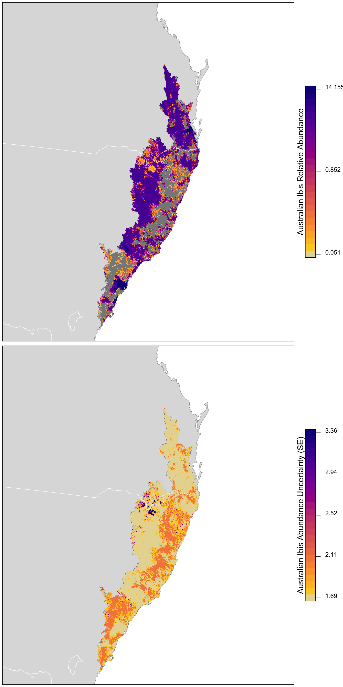

Lesson 13 Abundance
The previous two lessons focused on modeling occurrence, which was based on presence-absence data. However, in addition to recording which species they observed, most eBirders also specify how many individuals of each species were observed. In this lesson, we’ll take advantage of these counts to model relative abundance.
So far the lessons have covered random forests with the encounter rate models and occupancy models. Here we use a new type of model to describe variation in relative abundance Generalized Additive Models (GAMs). We will not describe these models in this lesson, rather just use them as a tool. In your own time, there are several resources on the internet to learn more about GAMs.
Let’s start by loading the packages and data required for this lesson. Note that, unlike the previous lessons, we need to subset the eBird data to remove records for which the observer recorded the presence of Australian Ibis, but didn’t record the number of individuals.
library(lubridate)
library(sf)
library(raster)
library(dggridR)
library(pdp)
library(edarf)
library(mgcv)
library(fitdistrplus)
library(viridis)
library(fields)
library(tidyverse)
# resolve namespace conflicts
select <- dplyr::select
map <- purrr::map
projection <- raster::projection
set.seed(1)
# ebird data
ebird <- read_csv("data/ebd_zf_sep_tst.csv") %>%
filter(common_name == "Australian Ibis") %>%
mutate(protocol_type = factor(protocol_type,
levels = c("Stationary" , "Traveling"))) %>%
# remove observations with no count
filter(!is.na(observation_count))
# modis habitat covariates
habitat <- read_csv("data/pland-elev_location-year.csv") %>%
mutate(year = as.integer(year))
# combine ebird and habitat data
ebird_habitat <- inner_join(ebird, habitat, by = c("locality_id", "year"))
# prediction surface
pred_surface <- read_csv("data/pland-elev_prediction-surface.csv")
# latest year of landcover data
max_lc_year <- pred_surface$year[1]
r <- raster("data/prediction-surface.tif")
# load gis data for making maps
map_proj <- st_crs(3577)
ne_land <- read_sf("data/gis-data.gpkg", "ne_country") %>%
st_transform(crs = map_proj) %>%
st_geometry()
cmz <- read_sf("data/gis-data.gpkg", "cmz") %>%
filter(cmz_name == "Eastern Australia Temperate and Subtropical forests") %>%
st_transform(crs = map_proj) %>%
st_geometry()
ne_state_lines <- read_sf("data/gis-data.gpkg", "ne_state_lines") %>%
st_transform(crs = map_proj) %>%
st_geometry()Exercise
Since we’re modeling abundance, we had to remove checklists for which the observer didn’t include a count of the number of Australian Ibis. How many checklists didn’t have counts? What proportion of the data is this?
13.1 Data preparation
As we learned in Part I of this workshop, spatiotemporal subsampling can reduce spatial and temporal bias, and class imbalance, provided we sample detections and non-detections separately. So, we’ll apply subsampling prior to fitting the relative abundance model.
# generate hexagonal grid with ~ 5 km betweeen cells
dggs <- dgconstruct(spacing = 5)
# get hexagonal cell id and week number for each checklist
checklist_cell <- ebird_habitat %>%
mutate(cell = dgGEO_to_SEQNUM(dggs, longitude, latitude)$seqnum,
week = week(observation_date))
# sample one checklist per grid cell per week
# sample detection/non-detection independently
ebird_ss <- checklist_cell %>%
group_by(species_observed, year, week, cell) %>%
sample_n(size = 1) %>%
ungroup() %>%
select(-cell, -week)Finally, we hold 20% of the data aside so we have an independent test set, which we can later use to assess the performance of our model.
13.2 Exploratory data analysis
We’ll start by examining the distribution of the count data to get an idea of which error distributions may be appropriate for the GAM model. We’ll also be on the lookout for evidence of zero-inflation, which can arise becuase eBird data often have a very high number of zero counts, since even common bird species are not seen on every checklist.
par(mfrow = c(1, 2))
# counts with zeros
hist(ebird_ss$observation_count, main = "Histogram of counts",
xlab = "Observed count")
# counts without zeros
pos_counts <- keep(ebird_ss$observation_count, ~ . > 0)
hist(pos_counts, main = "Histogram of counts > 0",
xlab = "Observed non-zero count")
prop_zero <- sum(ebird_ss$observation_count == 0) / nrow(ebird_ss)
prop_zero
#> [1] 0.76After the subsampling, 76.0% of the counts are zeros. The plot that includes zeros (top row) show an extremely zero-inflated and skewed distribution, due to the large number of zero-counts (checklists with no Australian Ibis detections). With zeros removed there is still a distribution of counts with a strong skew.
13.3 Abundance models
We’ll be using Generalized Additive Models (GAMs) to model relative abundance. GAMs can flexibly include many covariates while offering a choice of several error distributions suitable for count responses. Prior to fitting a GAM model, we need to construct the model formula. We’ll allow the effect of each individual continuous covariate to vary smoothly across the range its values by specifying a spline smooth with four degrees of freedom (k = 5). The one variable with a different smooth is checklist start time, which is a cyclic variable (i.e. 0 and 24 are both midnight), so we’ll use a cubic cyclic spline (bs = "cc") with six degrees of freedom (k = 7).
We include all the effort covariates and four land cover covariates. Deciduous broadleaf forest (pland_04) and mixed forest (pland_05) are known Australian Ibis breeding habitat, and they are known to avoid are croplands (pland_12) and urban (pland_13).
# gam formula
k_time <- 7
gam_formula <- observation_count ~ s(day_of_year, k = 5) +
s(duration_minutes, k = 5) +
s(effort_distance_km, k = 5) +
s(number_observers, k = 5) +
s(pland_13, k = 5) +
s(pland_09, k = 5) +
s(pland_02, k = 5) +
s(pland_08, k = 5) +
protocol_type +
s(time_observations_started, bs = "cc", k = k_time)
# explicitly specify where the knots should occur for time_observations_started
# this ensures that the cyclic spline joins the variable at midnight
# this won't happen by default if there are no data near midnight
time_knots <- list(time_observations_started = seq(0, 24, length.out = k_time))Exercise
Modify the above code to include the two elevation covariates in the model formula.
gam_formula_elev <- observation_count ~ s(day_of_year, k = 5) +
s(duration_minutes, k = 5) +
s(effort_distance_km, k = 5) +
s(number_observers, k = 5) +
s(pland_13, k = 5) +
s(pland_09, k = 5) +
s(pland_02, k = 5) +
s(pland_08, k = 5) +
s(elevation_median, k = 5) +
s(elevation_sd, k = 5) +
protocol_type +
s(time_observations_started, bs = "cc", k = k_time)Now we’ll use this formula to fit GAM models. It can be hard to judge in advance of model fitting which distribution will best describe the count data. So we will testing three count response distributions:
Zero-inflated Poisson: This distribution effectively fits the data in two parts: (1) a binomial model that determines the variables associated with species presence and (2) a Poisson count model for those places with species presence, that determines the variables associated with species count. This is an effective distribution when there are a large number of zero counts in the data and the positive counts approximate a Poisson distribution.
Negative binomial: The negative binomial distribution is related to the Poisson distribution. However, the Poisson distribution has the variance of the distribution equal to the mean, while the variance can be considerably different from the mean in the negative binomorial distribution. This distribution is appropriate for over-dispersed data when the variance is much larger than the mean—a situation called over-dispersion that is very common in ecological count data.
Tweedie distribution: This is a very flexible distribution that encompasses a wide variety of shapes, including those with extremely high variance relative to the mean and extreme over-dispersion. The Tweedie distribution fit in GAM spans a range of distributions from the Poisson to the gamma.
# zero-inflated poisson
m_ziplss <- gam(list(gam_formula, # count model
gam_formula[-2]), # presence model
data = ebird_split$test,
family = "ziplss",
knots = time_knots)
# negative binomial
m_nb <- gam(gam_formula,
data = ebird_split$train,
family = "nb",
knots = time_knots)
# tweedie distribution
m_tw <- gam(gam_formula,
data = ebird_split$train,
family = "tw",
knots = time_knots)13.4 Asssessment
To assess the predictive performance of these models, we start by predicting relative abundance on the test data set that we held aside from model fitting. We’ll do this separately for each distribution and compare their performance.
Care needs to be taken when making predictions from the zero-inflated Poisson model since it has two components: probability of presence and expected count given presence. As a result, the predict() function returns a two column matrix with the count and probability respectively, both on the scale of the link functions. So, we need to back-transform these values, then multiply them to get the predicted counts.
obs_count <- select(ebird_split$test, obs = observation_count)
# presence probability is on the complimentary log-log scale
# we can get the inverse link function with
inv_link <- binomial(link = "cloglog")$linkinv
# combine ziplss presence and count predictions
m_ziplss_pred <- predict(m_ziplss, ebird_split$test, type = "link") %>%
as.data.frame() %>%
transmute(family = "Zero-inflated Poisson",
pred = inv_link(V2) * exp(V1)) %>%
bind_cols(obs_count)
m_nb_pred <- predict(m_nb, ebird_split$test, type = "response") %>%
tibble(family = "Negative Binomial", pred = .) %>%
bind_cols(obs_count)
m_tw_pred <- predict(m_tw, ebird_split$test, type = "response") %>%
tibble(family = "Tweedie", pred = .) %>%
bind_cols(obs_count)
# combine predictions from all three models
test_pred <- bind_rows(m_ziplss_pred, m_nb_pred, m_tw_pred) %>%
mutate(family = as_factor(family))Assessing the fit of the models depends considerably on the goals of the model and hence on the most important aspects of the model fit for the intended use. Here we’ll calculate three different metrics, each of which is suitable for assessing performance for a different intended use. There are a variety of other metrics that can be used, but the metrics used to assess fit should be carefully chosen with the model goals in mind.
Spearman’s Rank Correlation** can be used to assess how each model performs in terms of the ranking of predicted counts. This can be most valuable if we want to understand which sites have highest abundance of the species.
Mean absolute deviation (MAD) is a robust statistic that describes the average deviation between observation and prediction, which gives an overall sense of the quality of the magnitude of the predicted counts. This can be most valuable if we want to understand how close our estimates of counts are to the observed counts.
In some cases, we may be particularly concerned with underestimating abundances. The number and proportion of predictions that are underestimated by an order of magnitude is one means of assessing performance in this respect. This can be most valuable if we want to understand how prone our model may be to underestimating counts.
# spearman’s rank correlation
test_pred %>%
group_by(family) %>%
summarise(rank_cor = cor.test(obs, pred,
method = "spearman",
exact = FALSE)$estimate,
mad = mean(abs(obs - pred), na.rm = TRUE),
n_under = sum(obs / pred > 10),
pct_under = mean(obs / pred > 10)) %>%
ungroup() %>%
knitr::kable(digits = 4)| family | rank_cor | mad | n_under | pct_under |
|---|---|---|---|---|
| Zero-inflated Poisson | 0.176 | 47.53 | 53 | 0.0433 |
| Negative Binomial | 0.355 | 3.76 | 29 | 0.0237 |
| Tweedie | 0.353 | 3.77 | 31 | 0.0253 |
Across all metrics, the zero-inflated Poisson model performs the worst: it has the lowest rank correlation, largest number of problematic errors, and the highest MAD. The negative binomial and Tweedie models are very similar in performance, with the negative binomial being slightly better.
Exercise
Imagine for your use case, underestimation is not a major problem, rather you want to avoid overestimating abundances. Summarize the test set predictions to indentify the number and proportion of times each model overestimates abundance by at least an order of magnitude. Ignore cases where the observed abundance was zero.
test_pred %>%
filter(obs > 0) %>%
group_by(family) %>%
summarise(n_under = sum(obs / pred < 10),
pct_under = mean(obs / pred < 10)) %>%
ungroup()
#> # A tibble: 3 x 3
#> family n_under pct_under
#> <fct> <int> <dbl>
#> 1 Zero-inflated Poisson 233 0.815
#> 2 Negative Binomial 257 0.899
#> 3 Tweedie 255 0.892We can also assess the quality of the magnitude of abundance estimates by looking at a plot of predicted and observerved counts from the test set. We’ll highlight in red the regions where the predictions are underestimated by more than an order of magnitude. We’ll also overlay the line \(y = x\), which separates overestimates (above the line) from underestimates (below the line), and a blue smoothed fit showing the general trend through all the data.
# plot predicted vs. observed
ticks <- c(0, 1, 10, 100, 1000)
mx <- round(max(test_pred$obs))
ggplot(test_pred) +
aes(x = log10(obs + 1),
y = log10(pred + 1)) +
geom_jitter(alpha = 0.2, height = 0) +
# y = x line
geom_abline(slope = 1, intercept = 0, alpha = 0.5) +
# area where counts off by a factor of 10
geom_area(data = tibble(x = log10(seq(0, mx - 1) + 1),
y = log10(seq(0, mx - 1) / 10 + 1)),
mapping = aes(x = x, y = y),
fill = "red", alpha = 0.2) +
# loess fit
geom_smooth(method = "loess",
method.args = list(span = 2 / 3, degree = 1)) +
scale_x_continuous(breaks = log10(ticks + 1), labels = ticks) +
scale_y_continuous(breaks = log10(ticks + 1), labels = ticks) +
labs(x = "Observed count",
y = "Predicted count") +
facet_wrap(~ family, nrow = 1)Overall, we see that most of the counts are underestimated, since most points and the blue line are below the gray \(y = x\) line. And, of these, many are underestimated by an order of magnitude or more.
Going forward, we should be aware that many of the estimates of relative abundance are likely to be underestimates. This can be a common model trait when the data are overdispersed or have many zeroes. Taking a holistic view of all the three metrics, the negative binomial appears to be best.
Depending on your focal species and region, as well as the particular goals of your analysis, some aspects of model fit will be more important than others, so it’s important to consider your assessment criteria and make sure they match your application.
13.4.1 Assessing covariate effects
We recommend assessing the fitted covariate effects to see whether they show biologically plausible relationships between covariates and species counts. Splines can sometimes overfit, notably when sample sizes are very large, and in this cases it is appropriate to reduce the degrees of freedom.
Calling the plot() function on the GAM object produces plots of the smooth functions for each of the separate predictors, which gives us a sense of the effect of each predictor on the count response.

If these relationships seem too wiggly to be biologically realistic, you should reduce the degrees of freedom for the problematic smooths until a biologically feasible relationship is achieved. In this case, the relationships appear to be reasonable for the negative binomial model, so we will use it for prediction below.
13.5 Prediction
Finally, once we have a model we are happy with, we can use the GAM to make a map of Australian Ibis relative abundance in the Temperature and Subtropical Forest CMZ! The data package contains a prediction surface consisting of the PLAND habitat covariates summarized on a regular grid of points across the CMZ. We’ll make predictions of relative abundance at all these points. However, first we need to bring effort variables into this prediction surface. As we did for encounter rate, we’ll make predictions for a standard eBird checklist: a 1 km, 1 hour traveling count at the peak time of day for detecting this species.
To find the time of day with the highest detection probability, we’ll predict abundance and its 95% confidence limits at a series of times throughout the day, then pick the time at which the lower confidence limit is at its maximum. By using the lower confidence limits, we select a time that we are confident has high detectability and thus avoid potentially unrealistic predictions from times of day for which few or no data existed (which is more of a risk with GAMs).
# create a dataframe of covariates with a range of start times
seq_tod <- seq(0, 24, length.out = 300)
tod_df <- ebird_split$train %>%
# find average pland habitat covariates
select(starts_with("pland")) %>%
summarize_all(mean, na.rm = TRUE) %>%
ungroup() %>%
# use standard checklist
mutate(day_of_year = yday(ymd(str_glue("{max_lc_year}-06-15"))),
duration_minutes = 60,
effort_distance_km = 1,
number_observers = 1,
protocol_type = "Traveling") %>%
cbind(time_observations_started = seq_tod)
# predict at different start times
pred_tod <- predict(pred_model, newdata = tod_df,
type = "link",
se.fit = TRUE) %>%
as_tibble() %>%
# calculate backtransformed confidence limits
transmute(time_observations_started = seq_tod,
pred = pred_model$family$linkinv(fit),
pred_lcl = pred_model$family$linkinv(fit - 1.96 * se.fit),
pred_ucl = pred_model$family$linkinv(fit + 1.96 * se.fit))
# find optimal time of day
t_peak <- pred_tod$time_observations_started[which.max(pred_tod$pred_lcl)]
# plot the partial dependence plot
ggplot(pred_tod) +
aes(x = time_observations_started, y = pred,
ymin = pred_lcl, ymax = pred_ucl) +
geom_ribbon(fill = "grey80", alpha = 0.5) +
geom_line() +
geom_vline(xintercept = t_peak, color = "blue", linetype = "dashed") +
labs(x = "Hours since midnight",
y = "Predicted relative abundance",
title = "Effect of observation start time on Australian Ibis reporting",
subtitle = "Peak detectability shown as dashed blue line")So, the peak time of day for detecting Australian Ibis is around 18:28 PM. Now we can add all the effort covariates to the prediciton surface.
# add effort covariates to prediction surface
pred_surface_eff <- pred_surface %>%
mutate(day_of_year = yday(ymd(str_glue("{max_lc_year}-06-15"))),
time_observations_started = t_peak,
duration_minutes = 60,
effort_distance_km = 1,
number_observers = 1,
protocol_type = "Traveling")Then estimate relative abundance, standard error, and 95% confidence limits at these points.
# predict
pred <- predict(pred_model, newdata = pred_surface_eff,
type = "link",
se.fit = TRUE) %>%
as_tibble() %>%
# calculate confidence limits and back transform
transmute(abd = pred_model$family$linkinv(fit),
abd_se = pred_model$family$linkinv(se.fit),
abd_lcl = pred_model$family$linkinv(fit - 1.96 * se.fit),
abd_ucl = pred_model$family$linkinv(fit + 1.96 * se.fit)) %>%
# add to prediction surface
bind_cols(pred_surface_eff, .) %>%
select(latitude, longitude, abd, abd_se, abd_lcl, abd_ucl)Next, we’ll convert this data frame to spatial features using sf, then rasterize the points using the prediction surface raster template.
r_pred <- pred %>%
# convert to spatial features
st_as_sf(coords = c("longitude", "latitude"), crs = 4326) %>%
select(abd, abd_se) %>%
st_transform(crs = projection(r)) %>%
# rasterize
rasterize(r)
r_pred <- r_pred[[-1]]Finally, let’s make maps of both relative abundance and its standard error! For the relative abundance map, we’ll treat very small values of relative abundance as zero.
# any expected abundances below this threshold are set to zero
zero_threshold <- 0.05
# project predictions
r_pred_proj <- projectRaster(r_pred, crs = map_proj$proj4string, method = "ngb")
par(mfrow = c(2, 1))
for (nm in names(r_pred)) {
r_plot <- r_pred_proj[[nm]]
par(mar = c(0.25, 0.25, 0.25, 5))
# set up plot area
plot(cmz, col = NA, border = NA)
plot(ne_land, col = "#dddddd", border = "#888888", lwd = 0.5, add = TRUE)
plot(cmz, col = "#888888", border = NA, add = TRUE)
# modified plasma palette
plasma_rev <- rev(plasma(25, end = 0.9))
gray_int <- colorRampPalette(c("#dddddd", plasma_rev[1]))
pal <- c(gray_int(4)[2], plasma_rev)
# abundance vs. se
if (nm == "abd") {
title <- "Australian Ibis Relative Abundance"
# set very low values to zero
r_plot[r_plot <= zero_threshold] <- NA
# log transform
r_plot <- log10(r_plot)
# breaks and legend
mx <- cellStats(r_plot, max)
mn <- cellStats(r_plot, min)
brks <- seq(mn, mx, length.out = length(pal) + 1)
lbl_brks <- c(mn, (mn + mx) / 2, mx)
lbls <- round(10^lbl_brks, 3)
} else {
title <- "Australian Ibis Abundance Uncertainty (SE)"
# breaks and legend
mx <- ceiling(1000 * cellStats(r_plot, max)) / 1000
mn <- floor(1000 * cellStats(r_plot, min)) / 1000
brks <- seq(mn, mx, length.out = length(pal) + 1)
lbl_brks <- seq(mn, mx, length.out = 5)
lbls <- round(lbl_brks, 2)
}
# abundance
plot(r_plot,
col = pal, breaks = brks,
maxpixels = ncell(r_plot),
legend = FALSE, add = TRUE)
# borders
plot(ne_state_lines, col = "#ffffff", lwd = 0.75, add = TRUE)
box()
# legend
par(new = TRUE, mar = c(0, 0, 0, 0))
image.plot(zlim = range(brks), legend.only = TRUE, col = pal,
smallplot = c(0.89, 0.92, 0.25, 0.75),
horizontal = FALSE,
axis.args = list(at = lbl_brks,
labels = lbls,
fg = "black", col.axis = "black",
cex.axis = 0.75, lwd.ticks = 0.5,
padj = 0),
legend.args = list(text = title,
side = 2, col = "black",
cex = 1, line = 0))
}
13.6 Exercises
Now that you’ve completed this lesson, try modifying your script to complete at least one of the following exercises:
Refit the model without effort variables and see how model performance changes.
Predict from the same model for checklists of 10 minutes duration, instead of 1 hour. Compare the results and consider how the interpretation changes.
Change the degrees of freedom for the covariate smooths and compare the fitted relationships.
Refit the model with a random forest. Compare the predictions and the fitted relationships with covariates.
Compare the encounter rate map to the relative abundance map.
Fit an encounter rate random forest model then use the predicted encounter rate as a new covariate in the abundance model. Compare the model performance.
Try producing a map of relative abundance using one of the other species in the example data.